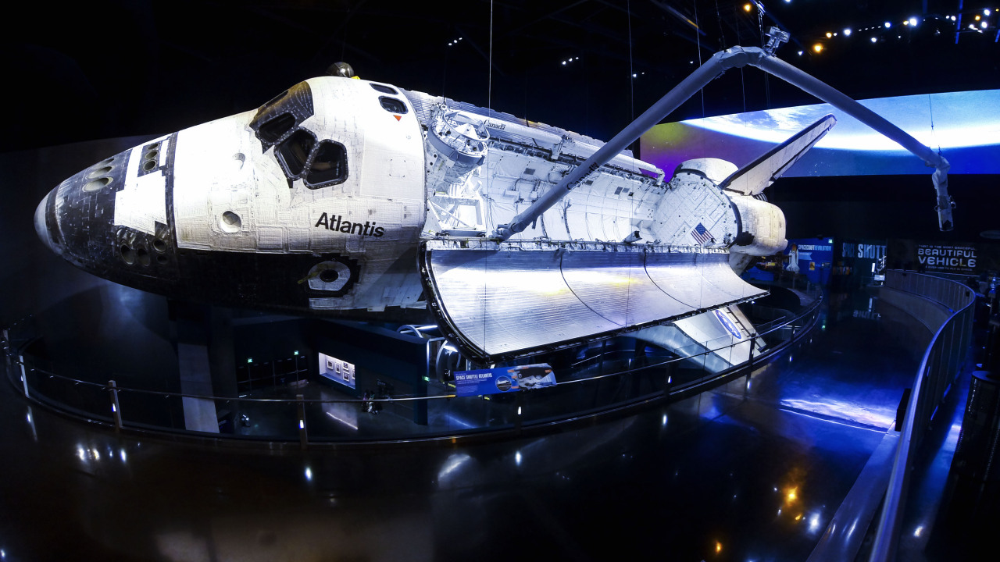
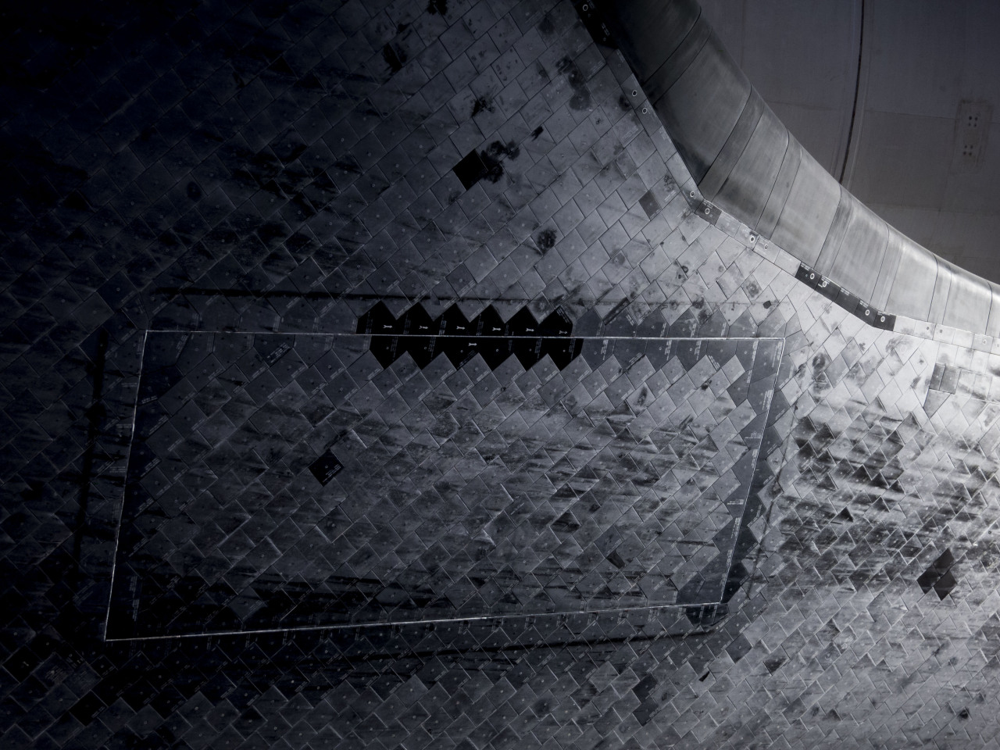
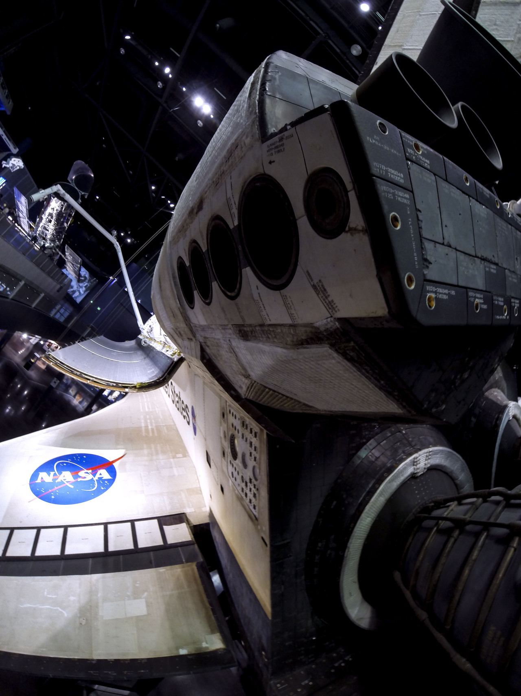
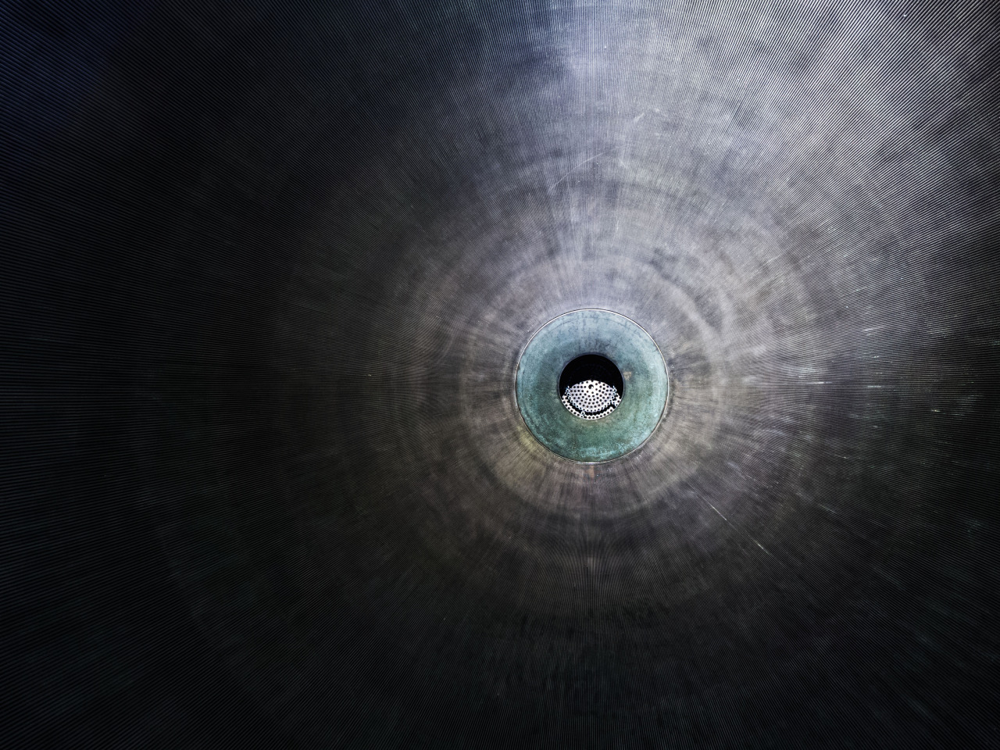
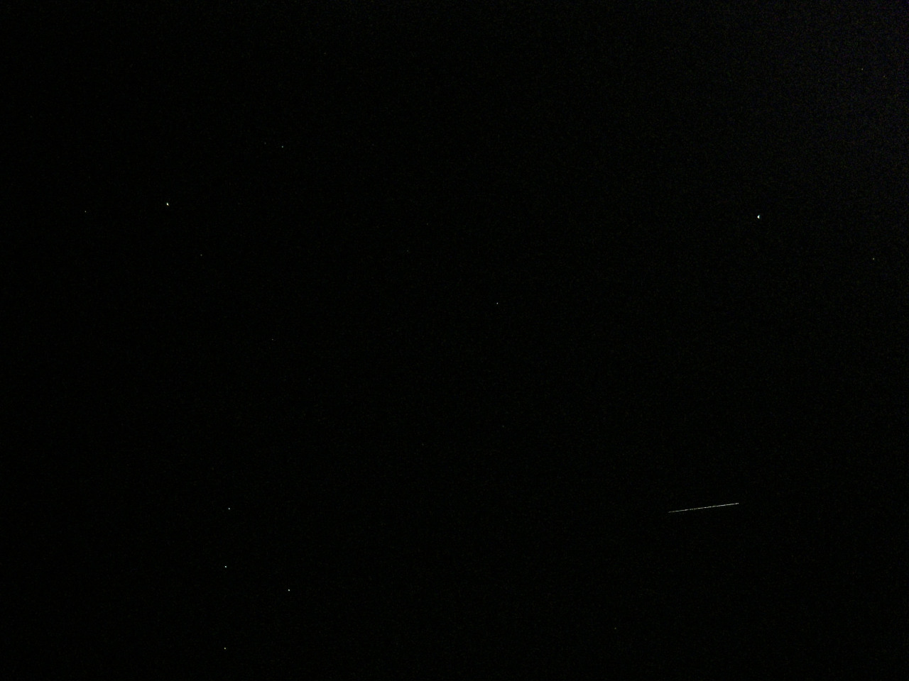

The Atlantis Space Shuttle Orbiter, on display at Kennedy Space Center Visitor Complex, is the most breathtaking museum piece on Earth. I say this because Atlantis wasn’t always on Earth and I have the photo to prove it. The final photo in the set shows Atlantis in orbit around our planet during STS-117. I photographed her from my front yard on the night of June 21, 2007, at the age of 17. I was blessed to live in the southeast corner of Idaho, an area with absolutely no light pollution. When Atlantis came overhead, I snapped this four second long exposure, getting the streak of light that you see in the lower-right corner of the frame. Seconds later, she had moved across the entire sky, over the horizon and out of sight. A few hours later, she reentered our atmosphere and landed safely back on earth. I’ll never forget that chilly night. Years before that, Atlantis dragged a sonic boom across my childhood home in Georgia while on approach to Kennedy Space Center. This was the first sonic boom I’d ever heard, and it scared the living hell out of me. When I see Atlantis up close, it’s surreal to think that this is the same object that I photographed before, the same ship that sonic boomed me. Every time I visit, I fondly remember these moments. It’s like seeing an old friend.